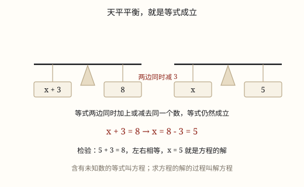

方程的意义与解方程
含未知数的等式才叫方程，两个条件缺一不可；解方程靠等式的基本性质，两边做同样的事，天平才一直平衡。
| 所属主题 | 式与方程 |
|---|---|
| 所属模块 | 数与代数 |
| 课标学段 | 第三学段（5~6年级） |
| 前置知识 | 用字母表示数 |
| 核心素养 | 符号意识推理意识模型意识 |
课标要求
| 数与代数·数量关系 | 根据具体情境理解等式的基本性质（例17）。 印刷第 24 页 行为动词：理解 |
|---|---|
| 数与代数·数量关系 | 在具体情境中，探索用字母表示事物的关系、性质和规律的方法，感悟用字母表示的一般性（例19）。 印刷第 24 页 行为动词：探索 |
说明
左盘放一个信封和 3 枚硬币，右盘放 11 枚硬币，天平正好平衡。信封里装着几枚？我们还不知道，但它是一个确定的数。数学里把这种「暂时不知道、但确实存在」的数叫未知数，通常用字母 x 表示。把这个平衡关系照原样写下来，就得到 x + 3 = 11。
这样的式子叫方程。判断它是不是方程，只看两个条件，缺一不可：一是必须含有未知数，二是必须是等式——有等号，左右两边相等。x + 3 = 11 两条都占，是方程。
少一条就不行。x + 3 只含未知数，没有等号，它只是一个式子；8 + 5 = 13 是等式，可里头全是已知数，也没有未知数。这两个都不是方程。而 6x = 45、2(x + 11) = 36、x ÷ 4 = 9 都是。
由此得到一条必须记牢的关系：方程一定是等式，等式不一定是方程。把所有等式看成一个大圈，方程就是大圈里的一小块——加上「含未知数」这条额外要求以后剩下的那部分。8 + 5 = 13 在大圈里、在小块外；x + 3 = 11 两处都在。
使方程左右两边相等的未知数的值，叫方程的解；求出这个值的过程，叫解方程。x = 8 是 x + 3 = 11 的解；而「两边同时减 3，得到 x = 8」这一串动作才叫解方程。前者是一个数（名词），后者是一件事（动词），别混着用。
小学解方程只用一件工具——等式的基本性质：等式两边同时加上或减去同一个数，等式仍然成立；两边同时乘同一个数，或同时除以同一个不为 0 的数，等式仍然成立。抓住这一句话，任何一步都能走通，不需要另记一套「移项变号」的口诀。
使用场景
称量与配平：用天平和砝码称出一袋未知重量的豆子，天平平衡的那一刻写出来的就是一个方程。
购物消费：知道总价和数量、要求单价，或者知道总价和单价、要求数量，都可以直接把要求的量设成 x。
校园生活：全班人数、每组人数、组数三者之间，知道两个求第三个，列方程比倒着推更省心。
家庭与年龄：储蓄罐里原有若干元，又存入一些，现在有多少——「原有 + 存入 = 现在」就是等量关系。
计量与估算：已知长方形的周长和长，求宽，周长公式本身就是一个含未知数的等式。
注意点
方程必须同时满足两条：含未知数、是等式。看着像方程其实不是的，多半是漏了等号。
每一步都要对两边同时做。只在左边减 8，天平就歪了，等号也就不再成立。
除数不能是 0。等式性质里那句「不为 0 的数」不是废话，两边同除以 0 是没有意义的。
解方程要写「解：」，等号上下对齐。一行一行写清楚，别把几步挤成一个式子，出错时也查不出来。
解完要检验。把求出的值代回原方程，算一算左右两边是不是真的相等；相等才算解对。
未知数后面不带单位。「设每支笔 x 元」，方程里只写 6x = 45，单位留在设句和答句里。

图 1：等式就像天平，两边同时拿掉一样的东西照样平衡
为什么是这样
算理推导
把方程想成一台天平：等号就是天平中间那根指针，左边和右边一样重的时候，指针才停在正中间。x + 3 = 11 说的是「一个信封加 3 枚硬币，和 11 枚硬币一样重」。
天平有一条铁律：两边同时拿走同样重的东西，或者同时放上同样重的东西，天平仍然平衡。左右各拿走 3 枚，左边剩一个信封，右边剩 8 枚，指针还是停在正中——这就是「两边同时减同一个数，等式仍成立」。
把两边的东西都变成原来的 2 倍（同样的倍数），或者把两边平均分成同样多的份，天平照样平衡。这就是「两边同时乘同一个数」「两边同时除以同一个不为 0 的数」——分成 0 份这件事根本做不到，所以除数不能是 0。
解方程要做的，就是想办法让 x 一个人留在等号左边，而每一步都不破坏平衡。x + 3 = 11 里 x 被「加了 3」缠住，那就两边同时减 3，把 3 从左边请走；右边 11 减 3 得 8，于是 x = 8。6x = 45 里 x 被「乘了 6」缠住，那就两边同时除以 6。
所以解方程不是背步骤，而是看清 x 外面裹了什么，就两边一起拆什么。裹了加就同减，裹了减就同加，裹了乘就同除，裹了除就同乘——顺序上先拆加减、再拆乘除，一层层剥到 x 露出来为止。
动手实验
找一台天平（或自制的衣架天平）和一把硬币。左盘放一个不透明信封加 3 枚硬币，右盘放 11 枚，调到平衡，把这件事记成 x + 3 = 11。然后左右两盘各拿走 3 枚，看指针是否还在正中；此时左盘只剩信封，右盘剩 8 枚，于是 x = 8。剪开信封数一数，正好 8 枚。再试一次 2x = 14：左盘放两个一模一样的信封，右盘放 14 枚；把两盘各自平均分成两堆，一堆是一个信封、另一堆是 7 枚，得 x = 7。
按场景的例题
例 1（场景：购物消费） 文具店买同样的中性笔
买 6 支同样的中性笔一共 45 元，每支多少元？列方程解答。
解：设每支 x 元。6 支就是 6x 元，等于 45 元，列方程 6x = 45。两边同时除以 6，得 x = 7.5。检验：6 × 7.5 = 45，左右相等。
答：每支 7.5 元。
例 2（场景：校园生活） 全班同学分组做实验
六(1)班 42 人分组做实验，每组 6 人，正好分完。可以分成几组？列方程解答。
解：设分成 x 组。每组 6 人，x 组一共 6x 人，等于全班 42 人，列方程 6x = 42。两边同时除以 6，得 x = 7。检验：6 × 7 = 42。
答：可以分成 7 组。
例 3（场景：家庭与年龄） 储蓄罐里的零花钱
小杰的储蓄罐里原有一些钱，这周又存入 25 元，现在一共 68 元。原来有多少元？
解：设原来有 x 元。「原有的 + 存入的 = 现在的」，列方程 x + 25 = 68。两边同时减 25，得 x = 43。检验：43 + 25 = 68。
答：原来有 43 元。
例 4（场景：计量与估算） 量长方形花坛的宽
一个长方形花坛的周长是 36 米，长是 11 米，宽是多少米？
解：设宽是 x 米。由周长公式 2 × (\text长 + \text宽) = \text周长，列方程 2(x + 11) = 36。两边同时除以 2，得 x + 11 = 18；两边同时减 11，得 x = 7。检验：2 × (11 + 7) = 36。
答：宽是 7 米。
常用推论
等式的基本性质：两边同时加上或减去同一个数，同时乘同一个数，或同时除以同一个不为 0 的数，等式仍然成立。
方程的解是一个数，解方程是一个过程；把解代回原方程能让左右两边相等，就说明解对了。
形如 x + a = b 的方程，两边同时减 a，得 x = b - a；形如 x - a = b 的，两边同时加 a，得 x = b + a。
形如 ax = b 的方程，两边同时除以 a（a ≠q 0），得 x = b ÷ a；形如 x ÷ a = b 的，两边同时乘 a，得 x = ab。
易错点
错把 x + 3 和 3x 也说成方程。
为什么错它们只含未知数，没有等号，不是等式。方程的两个条件缺一不可，光有未知数不算。
正确加上等号、让两边相等才是方程，如 x + 3 = 11、3x = 12。
错认为「等式就是方程」，说 8 + 5 = 13 是方程。
为什么错方程一定是等式，等式不一定是方程。8 + 5 = 13 里全是已知数，缺了「含未知数」这一条。
正确8 + 5 = 13 只是等式；只有含未知数的等式才是方程。
错解 x + 8 = 20 时，只在左边减 8，写成 x = 20。
为什么错只对一边动手，两边就不相等了，天平立刻歪掉，等号也就失去了意义。
正确两边同时减 8：左边 x + 8 - 8 = x，右边 20 - 8 = 12，得 x = 12。
错解 2x = 10 时，写成「两边同时除以 0」，或者由 0x = 5 推出 x = 5。
为什么错0 不能作除数，两边同除以 0 这件事本身没有意义；0x 永远等于 0，不可能等于 5，这样的方程没有解。
正确2x = 10 两边同时除以 2，得 x = 5；除数必须是 0 以外的数。
错把 x + 8 = 20 写成「移项得 x = 20 + 8」。
为什么错小学阶段解方程的依据是等式的基本性质，不是「移项变号」。跳过两边同时运算这一步，符号极容易搞反。
正确两边同时减 8，得 x = 20 - 8 = 12。
直观理解
把方程想成一台天平，x 是封在盒子里的砝码，盒子外面裹着几层包装：加了几、乘了几。解方程就是一层层拆包装——外面裹了加就两边一起减，裹了乘就两边一起除。每拆一层，两边同时动手，指针就一直停在正中；包装拆完，盒子里的数自己露出来。
含有未知数，还得是等式；两样都齐全，才叫方程式。两边同加减，天平不偏西；同乘同去除，零要躲开去。